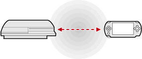
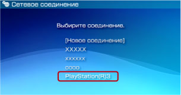

Сеть > Дистанционное воспроизведение (с помощью функции LAN системы PS3™)
Дистанционное воспроизведение (с помощью функции LAN системы PS3™)
Подключите систему PSP™ к другой системе PS3™, используя функцию беспроводной сети LAN системы PSP™. Этот способ подключения возможен только в том случае, если в системе PS3™ поддерживается функция беспроводной локальной сети.

Подготовка к использованию
Для использования дистанционного воспроизведения в первый раз следует зарегистрировать (подключить) систему PSP™ с системой PS3™. Зарегистрируйте систему в категории  (Настройки) >
(Настройки) >  (Настройки дистанционного воспроизведения) > [Регистрация устройства].
(Настройки дистанционного воспроизведения) > [Регистрация устройства].
Использование дистанционного воспроизведения
1. |
В системе PS3™ выберите |
|---|---|
2. |
В системе PSP™ выберите |
3. |
Выберите [Соединение через частную сеть]. |
4. |
Выберите [PlayStation(R)3] в списке соединений.  При успешном подключении в системе PSP™ отобразится экран системы PS3™. |
 (Сеть) >
(Сеть) >  (Дистанционное воспроизведение).
(Дистанционное воспроизведение). (Дистанционное воспроизведение).
(Дистанционное воспроизведение).Подсказки
- Дистанционное воспроизведение может использоваться в пределах беспроводной сети LAN системы PS3™.
- При включении параметра дистанционного запуска в системе PS3™ она может включаться автоматически (Wake on LAN). В таком случае вам не придется выполнять шаг 1, описанный выше. Подробнее см. в разделе (Настройки) > (Настройки дистанционного воспроизведения) > [Дистанционный запуск] в данном Руководстве.
Выход из дистанционного воспроизведения
Нажмите кнопку PS (Кнопка HOME) на системе PSP™ и выберите [Выйти из дистанционного воспроизведения] > [Выйти и отключить систему PS3™].
Подсказка
Выберите [Выйти без отключения системы PS3™], если в системе PS3™ выполняется копирование файлов, фоновая загрузка или другие задачи.